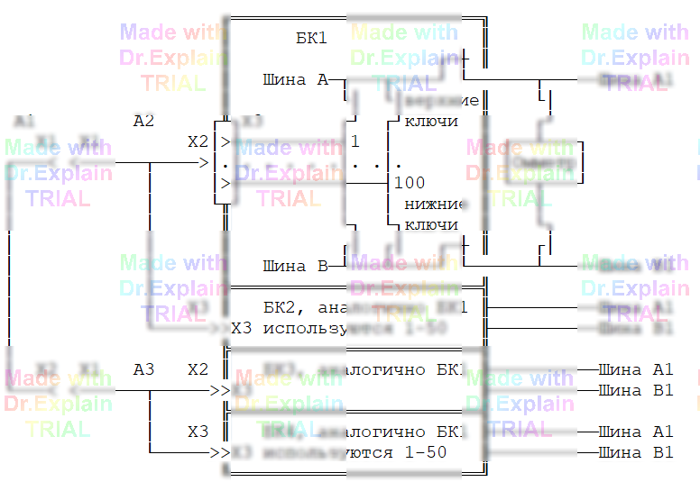

2.5 Команда ВШ
Принцип проверки цепей ОК и изоляции между ними на примере нашего кабеля (см. рисунок). Точки ОК, между которыми проверяется наличие или отсутствие электрической связи, с помощью реле коммутатора (ключей) подключаются к внутренним шинам БК A и B, которые в свою очередь соединяются с измерительными шинами A1 и B1. К ним подключается "омметр" (один из измерителей АСК, см. [2, п. 2.1]), измеряющий сопротивление между точками. Выбор конкретного измерителя задается командой ЯПК.

Схема подключения БК к шинам коммутатора, изображенная на рисунке 2.3, называется 2-х шинной (так как используется только две измерительные шины коммутатора: A1 и B1). Выбор схемы осуществляется командой ВШ. 2-х шинная схема задается командой:
30 ВШ 2Ш